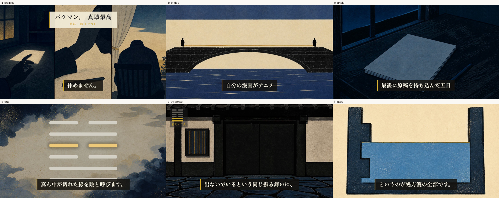

第50話 ／ content/070 ／ 通し視聴（改稿版）
直しました。もう一度、通しで見てください。
バクマン。（真城最高）× 節（せつ）。8分23秒。機械ゲートは全部PASSしています。
- あなたの指摘（導入の接続が雑・何を伝えたいか分からない）を受けて、幕1末尾の接続文と幕2の順序を作り直しました。
- そのとき絵の割当ミスも見つけて直しています（叔父の語りに橋の絵が付いていました）。
- 金の件はあなたの裁定（A＝絵コンテ優先）で確定。画像の採点は92点で合格しました。
本編（軽量プレビュー・854x480）
本番は 1920x1080・611MB（releases/070/essay-070.mp4）。
直したところ（絵と言葉が合っているか、ここを見てください）

左上から：①冒頭の約束 ②「自分の漫画がアニメ」に橋の絵（＝亜豆との約束）③「最後に原稿を持ち込んだ五日」に夜の机の原稿（＝叔父）④六爻図＝節・四爻が金 ⑤物証カット（閉じた門＋塀の板絵・バッジは初爻二爻）⑥升の断面＝処方箋の締め。
導入をどう直したか。 接続文を「バクマン。は、体が先に止まる話です」（＝作品の要約）から 「バクマン。の真城最高も、休まない理由がありました」 に変えました。要約ではなくあなたと同じ形の人物として差し出すので、幕2が「その理由」を説明する必然が立ちます。
そのうえで幕2の順序を 〔本人の理由＝亜豆との約束 → 理由の出どころ＝叔父 → 倒れる → 代償〕 に入れ替えました（前は叔父が先頭で、主人公を知らないまま別人の死因を聞かされる形でした）。「ウィキペディアには、こう書いてあります」という出典の読み上げも削除。新しい事実は一つも足していません。
自分で見つけた事故。 幕2の順序を変えたのに絵を動かしていませんでした。結果、叔父の語りに橋の絵が、約束の語りに夜の机の絵が付いていました（完全に逆）。レンダ後のフレームを見て気づき、入れ替えて直してあります。上の②③がその確認です。
機械ゲートの結果
| 検査 | 結果 |
|---|
| 尺 | 503.2秒（8分23秒） |
| 音のピーク | -5.1dB（クリップなし） |
| 幕間のBGM音量 | -38.8dB（基準 -44〜-32dB） |
| シーン境界の黒落ち | 28境界すべてなし |
| 幕1の尺 | 34.9秒（上限36秒） |
| 対比の投入 | 86.2秒（上限90秒） |
| 画像の識別監査 | 27枚すべて「作品・キャラ不明」＋安全弁4項目すべてfalse |
| 台本の独立採点 | 95点 |
| 画像の独立採点 | 92点（合格） |
画像の採点は 93/89/84/86/88/89/85/92 と振れました。致命傷（顔・作品の意匠・文字）は全周ゼロ。最終周はあなたの金の裁定を前提条件として採点者に伝えたうえで92点です。
まだ気になるなら
最終の採点者が「直せるなら」として挙げたのは、①階段が七段に見える（台本は「六つの段」）②升の水色が他より明るい ③紙が一枚に見えにくい ——の3点です。いずれも意味は通っている範囲と判断して止めました。気になれば言ってください。
決めてください
A — これで出す（タイトルとサムネを決めて、8/21 04:00 の予約まで進みます）
B — 声の速さを変えたい（新エンジンを1.4倍にしています。もっと遅く／速く、を言ってください）
C — 直したいところがある（時間かシーンIDで言ってください）
アップロードは非公開＋予約までです。公開ボタンはあなたが押します。